Mi scusi Gear — как пользоваться
Помогает лучше разобраться в своём персонаже и подготовить его к PvP наилучшим образом: примерка гира, тату и баффов, точные статы и урон по любому классу.
Зачем это нужно
Чтобы понять, как одеть персонажа и сколько он реально бьёт, приходится одевать его в игре, собирать цифры с вики по кускам и считать формулы в голове. А у каждого в группе своя табличка.
Ошибка с SA, сетом или тату стоит адены и недель фарма. На глаз не понять, что сильнее: +2 заточки или другой SA. В PvP не видно, сколько урона ты нанесёшь конкретному классу в его реальном гире и каким умением его быстрее снять. Окно персонажа в игре не объясняет, откуда берутся цифры.
Mi scusi Gear помогает разобраться в персонаже и подготовить его к PvP. Примеряешь вещи, заточку, SA, тату и баффы и сразу видишь статы, как в окне персонажа. Видно, что реально даёт каждая вещь и какой вариант сильнее против нужного класса в его гире. Всё общее: что настроил один, видят все.
1. Персонаж
Здесь по одному персонажу на каждый класс второй профессии. Выбираешь класс, и вся страница показывает его.
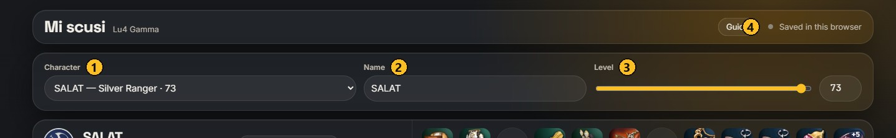
- Character — список всех 32 классов, сгруппированных по расам. Выбери, кого настраивать.
- Name — ник в игре, по желанию. Виден в списке и в таблице урона.
- Level — уровень 1–75. От него зависят HP/MP/CP, статы и уровни умений.
- Статус сохранения — «Live · shared» — изменения сохранены и видны всей группе. «Saving…» — идёт сохранение. «Saved in this browser» — нет связи с базой, правки пока только у тебя.
2. Экипировка
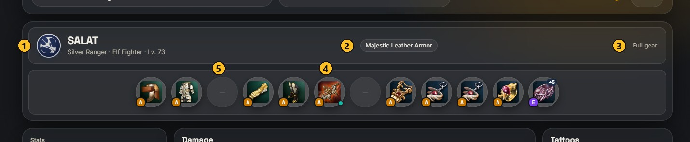
- Карточка — класс, раса и уровень. Раса берётся из класса автоматически.
- Сет — собранный комплект. Если все части заточены на +3 и выше, рядом будет бонус заточки сета.
- Full gear / Empty — надето всё или каких слотов не хватает.
- Слот — клик открывает выбор вещи, наведение показывает её характеристики.
- «—» в слоте — слот занят вещью на два слота: штаны под цельной бронёй, щит при луке или двуручном оружии.
Окно выбора вещи
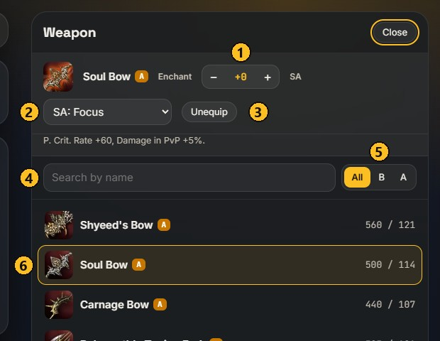
- Enchant − / + — заточка от +0 до +16. Статы и бонус зарядов пересчитываются сразу.
- SA — особое свойство оружия, если у вещи есть варианты.
- Unequip — снять вещь.
- Поиск — по названию.
- All / B / A — фильтр по грейду.
- Клик по строке — надеть. Заточка переносится на новую вещь.
3. Статы
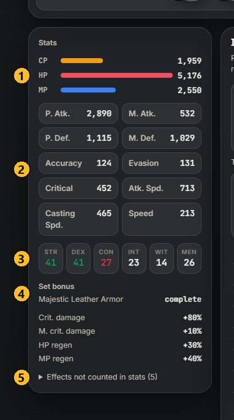
- CP / HP / MP — с учётом CON/MEN, вещей, пассивок, клана и баффов.
- Боевые статы — P. Atk., M. Def., скорости, крит, щит — те же цифры, что в окне персонажа в игре.
- Атрибуты — зелёный — выше базового, красный — ниже. Наведение показывает базу.
- Set bonus — какие сеты работают и их заточка.
- Effects not counted — эффекты, которые в статы не входят: шансовые срабатывания и условия вроде «при HP ниже…».
Насколько это точно?
Все формулы взяты из закреплённой темы сервера «Математика и механики игры» — и статы, и урон, и шансы. Таблицы модификаторов STR/DEX/CON/INT/WIT/MEN и уровня сверены с ней значение в значение.
Движок сверен с окном персонажа в игре (Swordsinger 75: HP, MP, CP, атака, защита, скорость атаки и крит сошлись) и с расчётами на 2 400 случаях. Надетая вещь заменяет базу своего слота, как в игре.
4. Тату
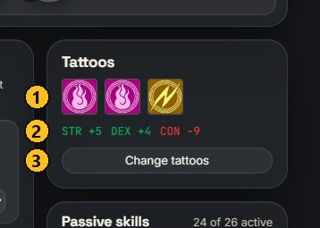
- Символы — три слота, как в игре. Наведение — что даёт тату, клик — открыть окно тату.
- Итог — сколько тату дают в сумме к каждому атрибуту.
- Change tattoos — открыть окно тату.
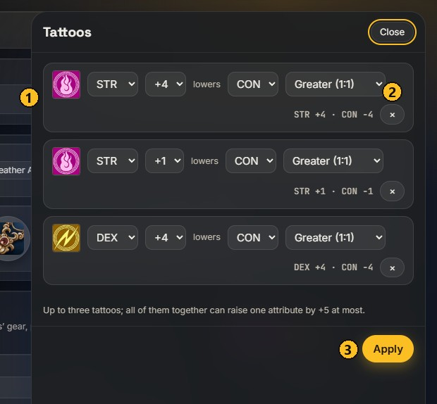
- Строка тату — какой атрибут поднять, на сколько, какой понизить и тип краски (Greater 1:1 или обычная −n−1).
- × — очистить слот.
- Apply — применить все три тату сразу.
5. Пассивки и клан
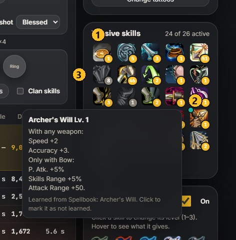
- Иконка — пассивка и её уровень. Клик поднимает уровень, правая кнопка опускает, по кругу. Наведение — описание. Янтарный значок — максимальный доступный уровень, так по умолчанию; белый — уровень выставлен вручную.
- Бирюзовая точка — пассивка из книги (Fighter’s / Archer’s / Magician’s Will). У них в круг уровней добавлено «не выучена» — на значке тогда «—».
- Серая иконка — сейчас не работает: нужно другое оружие или броня. Причина есть в подсказке.
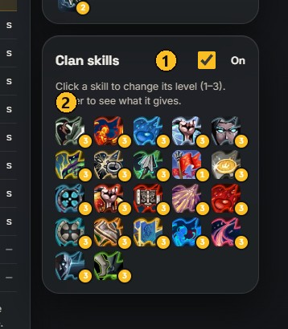
- Галочка — включить клан-скилы для персонажа.
- Иконка — клик меняет уровень по кругу 1 → 2 → 3.
6. Урон
PvP-урон выбранного персонажа по любому другому классу. Учитываются гир, тату, пассивки, клан и баффы обеих сторон.
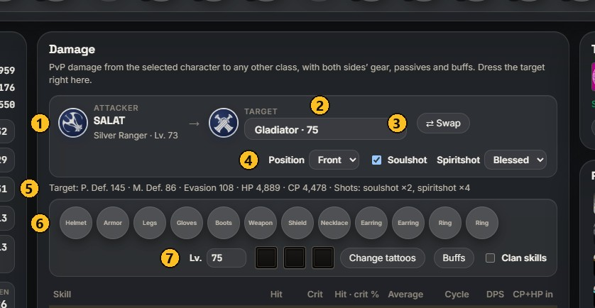
- Attacker — атакующий — персонаж, выбранный вверху страницы.
- Target — цель — любой другой класс.
- Swap — поменять атакующего и цель местами.
- Position / Soulshot / Spiritshot / Charges / Distance — позиция, заряды, уровень зарядов силовых и звуковых умений (1–8) и дистанция до цели — последняя появляется, когда в руках лук. Сбоку и сзади выше и урон, и шанс крита, и меткость; щит блокирует только спереди.
- Строка цели — защита, HP и CP цели и итоговые множители зарядов. Заточка оружия даёт +0,7% к заряду за уровень.
- Гир цели — переодевай цель прямо здесь: клик по слоту открывает то же окно выбора вещи.
- Уровень, тату, Buffs, Clan skills цели — всё, что влияет на её защиту.
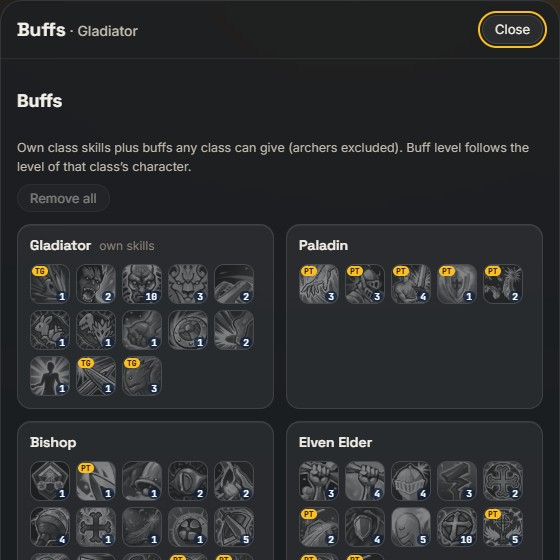
Кнопка Buffs у цели открывает её баффы сбоку. Таблица урона пересчитывается сразу.
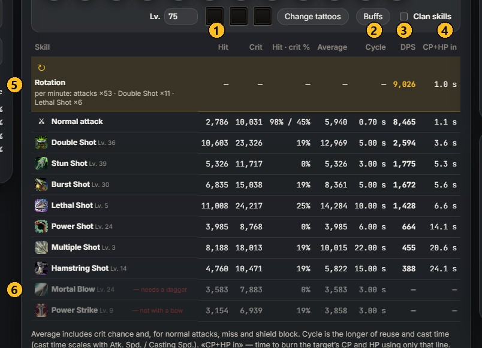
- Hit / Crit — урон обычного удара и крита. Average — средний с учётом шанса крита, промахов и блока.
- Cycle — как часто можно бить этим умением: большее из перезарядки и времени применения.
- DPS — урон в секунду, если бить только этим. Таблица отсортирована по нему.
- CP+HP in — за сколько секунд эта строка в одиночку снимет цели весь CP и HP.
- Серая строка — умение недоступно с текущим оружием: «needs a dagger», «not with a bow».
Что учитывается и что нет
Учитывается: P. Atk./M. Atk. и защиты обеих сторон, шанс и сила крита (включая магический), PvP-бонусы, заряды и множитель заточки оружия, блок щитом и идеальный блок, сопротивление магии, уклонение от умений, позиция, игнор защиты, заряды силовых и звуковых умений, шанс прохождения ударов кинжалом, дистанция выстрела из лука, Skill Mastery и откат умений.
Пока нет: атрибуты (огонь/вода…), дебаффы на цели, урон питомцев, регенерация.
7. Баффы
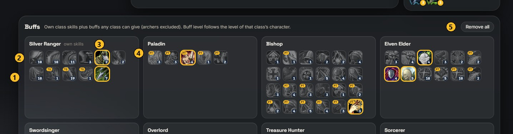
- Группа класса — свои умения класса и баффы, которые дают другие классы.
- Иконка — клик — включить или выключить. Число — уровень баффа.
- Подсвеченная — бафф включён и уже учтён в статах.
- PT / TG — PT — бафф на группу, TG — переключаемое умение (стойка, аура).
- Remove all — снять все баффы.
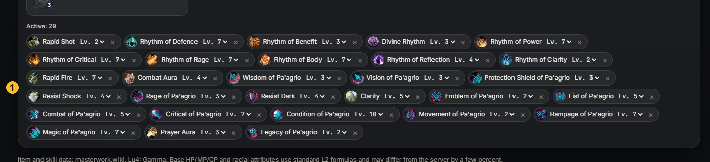
- Активные баффы — список включённых. Можно сменить уровень или убрать ×.
Вопросы
Где хранятся мои изменения?
В общей базе группы. Все видят одно и то же, правки приходят без перезагрузки.
Почему цифры чуть отличаются от игры?
Не учтены атрибуты и эффекты, которые срабатывают по условию: они перечислены в «Effects not counted in stats». Если нашёл расхождение, пришли скрин окна персонажа, поправим.
Можно ли сравнить два варианта гира?
Да: открой таблицу урона и меняй вещь в слоте — DPS и «CP+HP in» пересчитываются сразу.